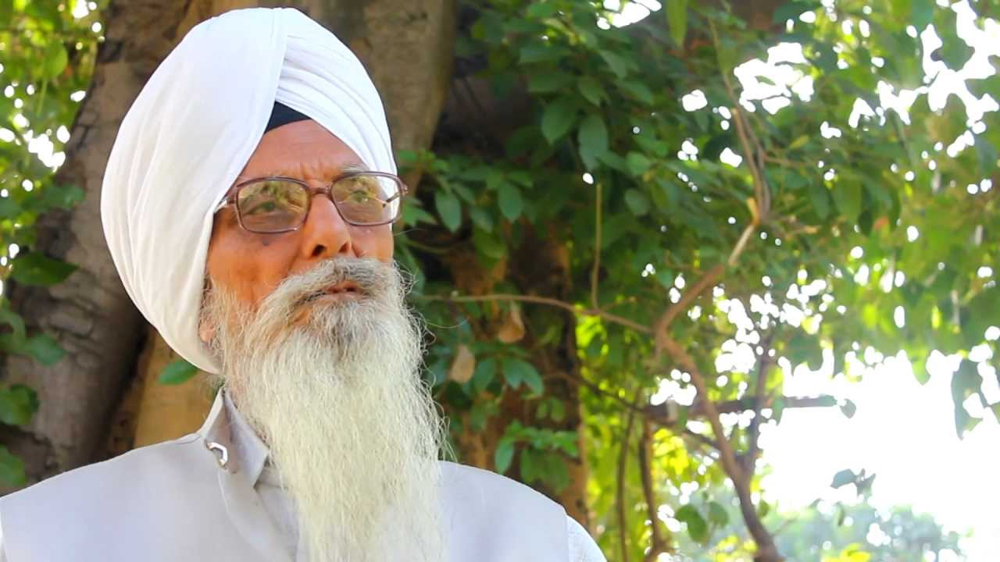

Kirtanis (Artists)
Search Artist: Quick Jump
Bhai Avtar Singh
 Bhai Avtar Singh (1925-2006) was always an ardent exponent of Gurmat Sangeet who practised the traditional style of Kirtan in keeping with the historic melodies of Guru's Ragis. It was with great sadness that the Sikh community acknowledged the loss of their most dedicated Gurbani Kirtania who passed away peacefully at about 10.50 PM (IST), November 24th, 2006. Bhai Avtar Singh who was 81 years old, passed away at his residence, with his whole family present.
Bhai Avtar Singh (1925-2006) was always an ardent exponent of Gurmat Sangeet who practised the traditional style of Kirtan in keeping with the historic melodies of Guru's Ragis. It was with great sadness that the Sikh community acknowledged the loss of their most dedicated Gurbani Kirtania who passed away peacefully at about 10.50 PM (IST), November 24th, 2006. Bhai Avtar Singh who was 81 years old, passed away at his residence, with his whole family present.
Bhai Sahib Avtar Singh Ji and Bhai Sahib Gurcharan Singh Ji have rendered invaluable service to the Sikh Panth by preserving Gurmat Sangeet in its pristine form. They accomplished this by their unwavering commitment to the tradition over the years even when Gurmat Sangeet was being subverted by the pressures of popular culture and film music. The crowning achievement of their career was the publication of "Gurbani Sangeet Prachin Reet Ratnavali" in which they documented hundreds of traditional Gurmat Sangeet compositions handed down from generation to generation in an unbroken oral tradition.
Professor Kartar Singh

Prof Kartar Singh was born in 1928 in Ghumanke village in Lahore district of Punjab, now in Pakistan. He was initially trained in the traditional Gurbani music by several teachers including Giani Gurcharan Singh, Bhai Sunder Singh Kasoorwale, Bhai Dalip Singh, and J.S. Bhanwra. Later, he honed his art under the guidance of Balwant Rai Jaswal. Among the foremost singers of Gurbani today, Professor Kartar Singh has at the same time pursued a career in the teaching of music. He taught first at the Malwa Central College of Education and later served at the Guru Nanak Girls College, Ludhiana, as Head of its department of music.
At present, he is Director of the Gurmat Sangeet Academy at Sri Anandpur Sahib, Ropar, where he has trained a large number of students. He has participated in the Basant Gurmat Samagam during the Hola Mohalla festivities at Sri Anandpur Sahib since 2000. He also attended the Gurmat Samagam commemorating three hundred years of the Gurta Gaddi of Sri Guru Granth Sahib, rendering Gurbani in prescribed ragas accompanied by traditional instruments. Recordings of Shabads sung by Shri Kartar Singh have been widely disseminated. He has also authored several books on Gurbani music. For his work in propagating Gurmat Sangeet, he has received wide acclaim from the general public and concerned institutions
Bhai Samund Singh
 Born at village Mulla Hamza in Montgomery District (now in Pakistan) in 1900 A.D., Bhai Samund Singh was given training in music by his father Bhai Hazur Singh Ji from his early child-hood. As a little boy he won a number of prizes and distinctions at musical concerts. He came to be known as 'Kaka Samund Singh' and was much in demand at Sikh congregations. His party came to be known as the best in the understanding of their art and almost perfect in presentation of Gurbani Kirtan.
Born at village Mulla Hamza in Montgomery District (now in Pakistan) in 1900 A.D., Bhai Samund Singh was given training in music by his father Bhai Hazur Singh Ji from his early child-hood. As a little boy he won a number of prizes and distinctions at musical concerts. He came to be known as 'Kaka Samund Singh' and was much in demand at Sikh congregations. His party came to be known as the best in the understanding of their art and almost perfect in presentation of Gurbani Kirtan.
With his unique melo-dious voice, an extensive and deep understanding of Gur-bani, correct interpretation of ragas, attractive style of sing-ing and great human qualities, he reigned supreme for sixty years in the world of Gurbani Kirtan. He performed kirtan at the Gurdwara Janam Sthan, Sri Nankana Sahib, the birth place of Guru Nanak Dev, for many years. He broadcast kirtan for 36 years from All India Radio, Lahore and later from Jalandhar and commanded wide listening. Passers-by stopped in the streets to listen to his kirtan irrespective of their faith. He was invited to perform kirtan in the National Programme of Music by All India Radio, the highest recognition of his art. He was given State award by the Punjab Government in 1971. He passed away at Ludhiana (5th January, 1972).
Bhai Balbir Singh
 Bhai Balbir Singh Ji Sidki was born in his maternal village Mrigindpura near Bhikhiwind (Amritsar), Punjab on March 23rd, 1933 to Mata Prasan Kaur Ji and Bhai Santa Singh Ji. Bhai Sahib Ji was the eldest of the four brothers. His father Bhai Santa Singh Ji was a famous tabla/pakhawaj exponent who taught at the Gurmat Vidyalaya in Taran Tarn (Amritsar). Bhai Balbir Singh Ji received his initial training in Gurbani Kirtan from his father, his grandfather Bhai Kundan Singh Ji, and great-grandfather Bhai Hira Singh Ji.
Bhai Balbir Singh Ji Sidki was born in his maternal village Mrigindpura near Bhikhiwind (Amritsar), Punjab on March 23rd, 1933 to Mata Prasan Kaur Ji and Bhai Santa Singh Ji. Bhai Sahib Ji was the eldest of the four brothers. His father Bhai Santa Singh Ji was a famous tabla/pakhawaj exponent who taught at the Gurmat Vidyalaya in Taran Tarn (Amritsar). Bhai Balbir Singh Ji received his initial training in Gurbani Kirtan from his father, his grandfather Bhai Kundan Singh Ji, and great-grandfather Bhai Hira Singh Ji.
Bhai Balbir Singh Ji began learning singing at the tender age of four. Bhai Sahib Ji made his debut at the Darbar Sahib, Taran Taran at the tender age of seven where he sang two compositions. Bhai Balbir Singh Ji accompanied his father who travelled extensively to Benaras, Lucknow, Gwalior, Pune, Calcutta and Delhi for music conferences. Bhai Sahib Ji was able to listen to and seek blessings from some of the finest names in Indian classical music.
Bhai Bakshish Singh
 Bhai Bakhshish Singh, the renowned Hazoori Ragi, kirtaniya of divine hymns of Guru Granth Sahib composed in different ragas and singer of other forms of spiritual music. God had bestowed on Bhai Bakhshish Singh a vibrant, captivating and golden voice most appropriate for singing Gurbani according to the classical specifications laid down for different shabads. His kirtan created a celestial atmosphere synchronising with the gist of the holy hymns. He lifted the listeners to divine heights. He ferried them across the ocean of life to Sachkhand, illumined their minds and made them feel one with the eternal Supreme Lord.
Bhai Bakhshish Singh, the renowned Hazoori Ragi, kirtaniya of divine hymns of Guru Granth Sahib composed in different ragas and singer of other forms of spiritual music. God had bestowed on Bhai Bakhshish Singh a vibrant, captivating and golden voice most appropriate for singing Gurbani according to the classical specifications laid down for different shabads. His kirtan created a celestial atmosphere synchronising with the gist of the holy hymns. He lifted the listeners to divine heights. He ferried them across the ocean of life to Sachkhand, illumined their minds and made them feel one with the eternal Supreme Lord.